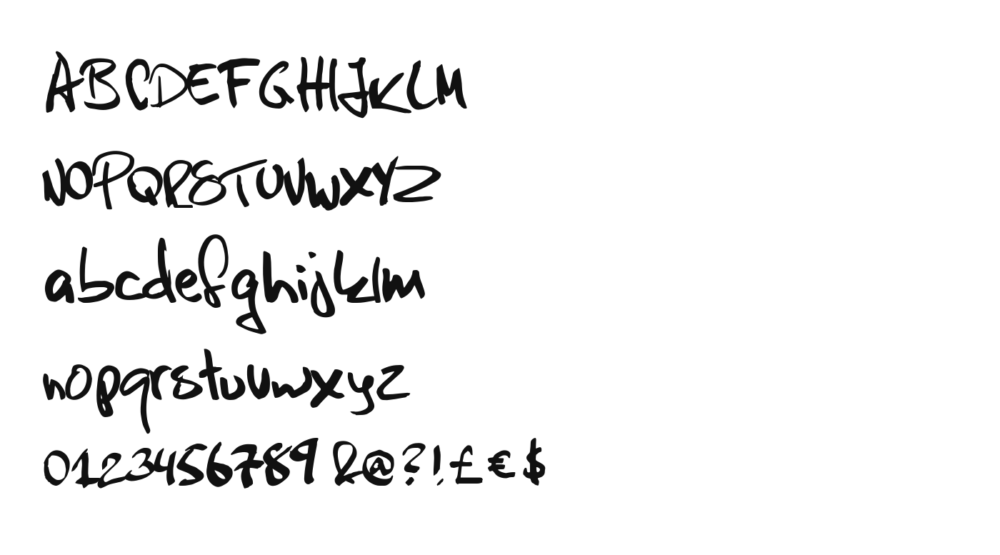
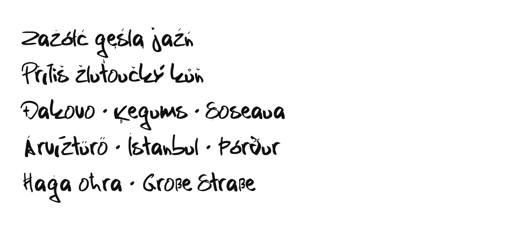

Snark is a felt-tip hand written at speed. No two letters lean quite the same way and the baseline wanders, but the strokes are decisive and the bowls stay round and open, so it reads as quick rather than careless. The hand is the designer's own, from Swedish games magazines where headlines were scrawled fast and loud — nearer a tag on a wall than typesetting. It holds together further down the scale than most hands of its kind. To contribute, see github.com/linusareng/Snark.

It covers the Google Fonts Latin Core character set, supporting Polish, Czech, Slovak, Croatian, Latvian, Lithuanian, Romanian, Hungarian, Turkish, Maltese, Icelandic, German and the other Latin-script languages of Europe. Accented forms are composed from drawn marks, so a caron carries the same hand as the letter beneath it.
